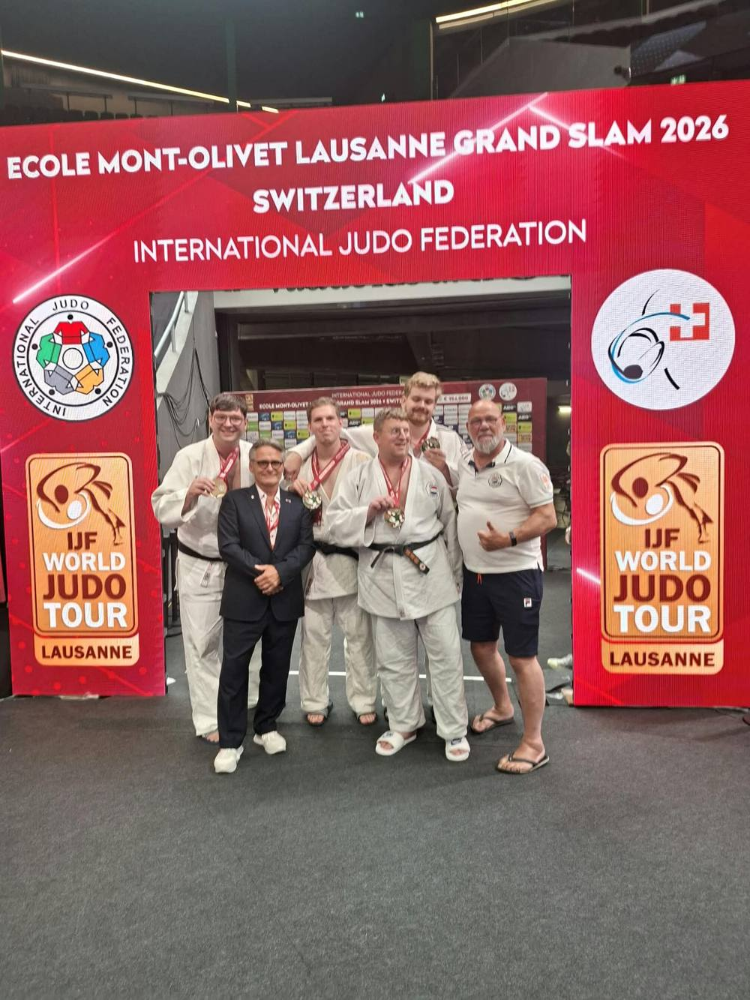
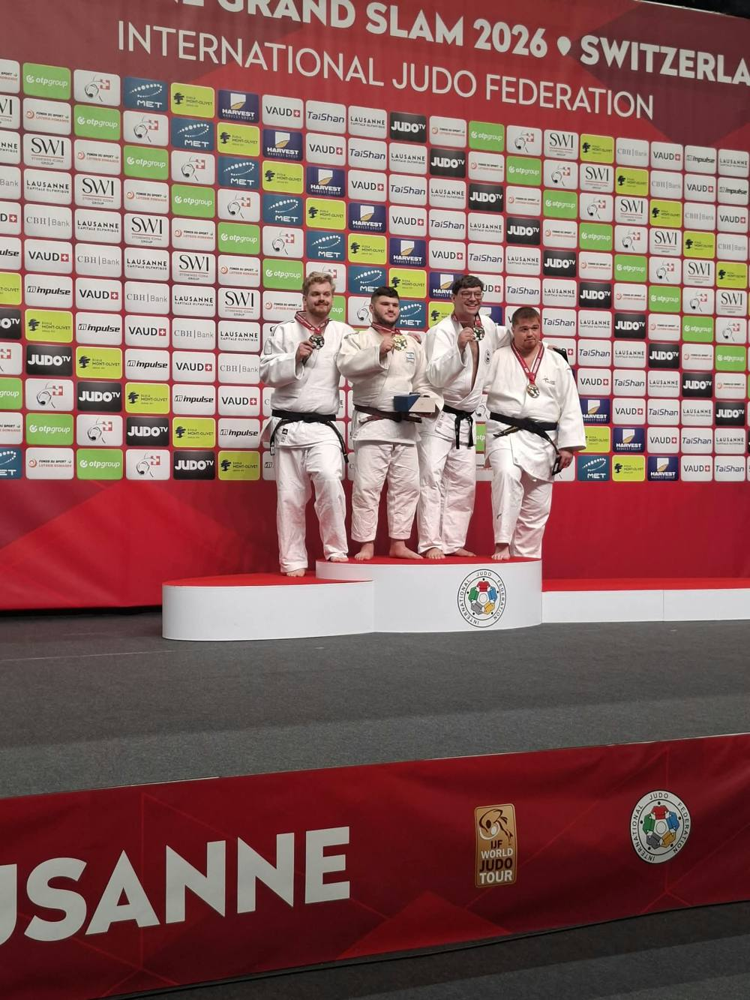

28–30 augustus 2026 · Lausanne, Zwitserland
De eerste Grand Slam Adaptive Judo
In het weekend van 28 tot en met 30 augustus werd in het Zwitserse Lausanne de eerste Grand Slam Adaptive Judo gehouden. Het was de eerste keer dat judoka's met een verstandelijke beperking konden meedoen aan zo'n groot judotoernooi en zo aan de wereld konden laten zien wat ze kunnen. Het is een eer om voor Adaptive Team NL Judo uit te komen voor Nederland, als onderdeel van de JBN (Judo Bond Nederland).
Voor onze school kwam Dion Sassen uit in de gewichtsklasse 100+, samen met zijn trainingsmaatjes uit de regio Limburg. Omdat ikzelf even in de lappenmand zit wegens hartproblemen, kon ik niet mee als coach, maar ben wel als gast meegeweest. Coach Rudi Verhage ging mee met de jongens om het hoogst haalbare uit dit toernooi te halen.
In zijn eerste partij kwam Dion tegen zijn Belgische tegenstander al snel op achterstand met een half punt (wazari). Het gevecht ging door, zijn tegenstander zette weer een techniek in, maar Dion nam hem over op de grond en won met een houdgreep op vol punt (ippon). Daarna verloor hij zijn volgende partij van een Israëlische judoka op ippon, waardoor hij voor de derde plaats moest. Die won hij: een mooie derde plaats, en op naar het EK dat dit jaar in Belgrado wordt gehouden.
Ook zijn andere judomaatjes deden het goed: Jurgen van der Heijden werd derde, en Koen Hoogenveen en Marco van Kaathoven werden allebei tweede. Naast hun medailles kregen ze voor het eerst ook een geldprijs mee naar huis — dik verdiend, mannen. Trots op jullie!
— Jan Rust